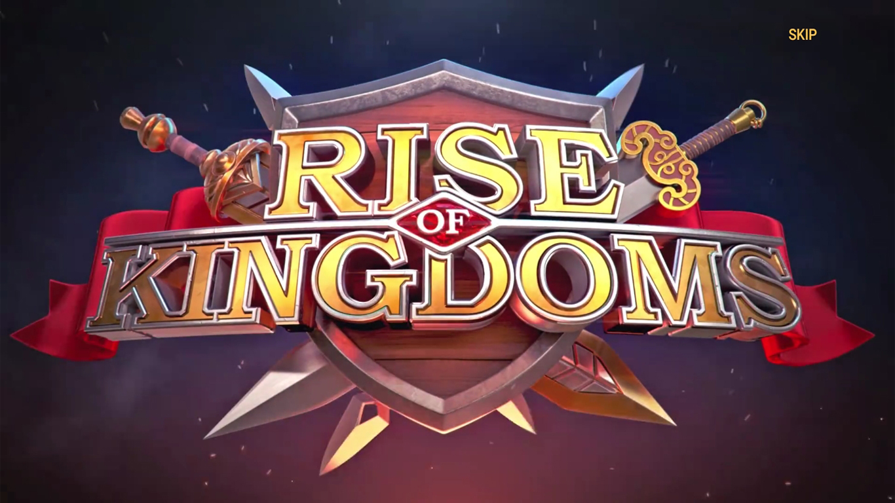

Как играть в Rise of Kingdoms
 Классный каналЭтот канал посвещён игре Rise of Kingdoms.
Топ 3 ошибки новечков в Rise of Kingdoms
1. Не используйте универсальных золотых скульптур на командиров из золотых ключей. Ни в коем случаем не расходуйте универсальные золотые скульптуры на героев из золотых ключей. Это не надо делать потому, что после того, как герой будет полностью прокачан, головы этого командира, которые Вы будете получать из золотых ключей просто будут копиться. Их конечно можно обменять вначале КВК, но лучше потратить универсальные головы на героев из колеса фортуны или из СМП.
2. Не расходуйте универсальные золотые скульптуры на героев, которые Вы не будете использовать. Очень Важно составить список героев в которые Вы будете инвестировать, чтобы не тратить в пустую золотые головы. У нас есть прекрасная статья по этому поводу — 2-х летний план для бездонатных игроков (читать). Этот план отлично подойдет и для донатных ребят.
3. Используйте самоцветы с наибольшей выгодой. Мой совет для бездонатных ребят и девчат в первую очередь вкладывать кристаллы в VIP пока он у Вас не будет 14 уровня. Попутно, по необходимости, покупайте книги для замка. Все траты мы делаем только на событии «Больше, чем блестяшки» (читать про событие). Если Вы донатный игрок, то следующий приоритет будет колесо фортуны. А дальше на сколько денег хватит <
Топ легендарных командиров
Командир Общий рейтинг Защита города Откр ытое поле (PVP) Сбор на города Сбор на стро ения Защ ита стро ений Кан ьон Невский 5+ 4 5 5 5 4 5 Сципион Прайм 5 4- 5+ 4+ 4+ 5- 5 Боудикка (прайм) 5 3 5 5 5 3 5 Жанна (прайм) 5 4 5 5 5 3 5 Гуань Юй 5 2 5 5- 5- 4- 5 Сян Юй 5 2 5 5+ 5+ 2 5 Навухо доносор 5 2 5 5- 5- 2 5- Гильг амеш 5 2 5- 5 5 2 5 Генри 5 2 5 5 5+ 2 4+ Александр 5 2- 5 4+ 4 2 5- Артемизия 5 5- 5 4+ 4 5- 5- Ли Сон Ге 5 4+ 5 4+ 5- 5- 5+ Рамзес 2 5- 2 5- 4+ 4+ 3 4+ Виль гельм I 5- 2 5 4+ 4+ 3 5 Хонда 5- 2 5 4+ 4+ 2 5 Бертран 5- 2 5- 5- 5- 2 4+ Чандр агупта 5- 2 5- 4+ 4+ 2 4+ Аттила 5- 3 5- 5 5- 4 4+ Такеда 5- 3 5- 5 4 4 4+ Кир 5- 2 5 4+ 4 2 4+ Харальд Сигур дссон 5- 2 5- 5- 5 2 4+ Саладин 5- 3+ 5- 4+ 4 4+ 5- Леонид 5- 3 5- 4+ 5- 4- 5 Траян 5- 2 5 2 4 2 5 Мулан 5- 2 5- 2 2 2 5 Ричард 5- 3+ 5- 3+ 3 4- 5 Карл Мартелл 5- 4+ 4+ 3 4 4 5- Этельфлед 5- 2 4+ 3- 3 2 5- Аманиторе 5- 5 5- 4+ 4 5- 4+ Пакаль 5- 2 5- 5 5 2 4+ Чок 5- 2 5- 4+ 4 2 4+ Томирис 5- 3 5 5- 4+ 4+ 4+ Минамото 5- 3 5- 3 4 2 5- Мехменд 2 5- 2 5- 5- 4 2 5- Константин 4+ 4+ 4 3+ 2 3+ 5+ Тутмос 4+ 2 4+ 2 2 2 4 Эдвард 4+ 3 4 4+ 4 2 4+ Монтесума 4+ 2 4 2 4 2 3 Чингисхан 4+ 2- 4 4 4 2 4 Люй Бу 4+ 2 4 4+ 3 2 4+ Сид Кампеадор 4+ 3+ 4+ 3+ 4 3 4 Сулейман 4 2 4 4+ 4 2 4 Рагнар 4 2 4- 4+ 4- 2 4- Юлий Цезарь 4 2 4+ 4+ 4 2 4+ Ганнибал Барка 4 2 4+ 4+ 4 2 4+ Фридрих 1 4 2 4 4+ 4 2 4 Цао Цао 4 3 4+ 3 3+ 2 4 Зенобия С 5- 3- 2 2 5 3 Флавий C 5- 4 2 2 5+ 2 Ян Жижка C 5- 4+ 3 3 5 4+ YSS C 5 2 2 2 5 2 Феодора С 5+ 2 2 2 4+ 5- Ядвига С 5- 4 3+ 3+ 5 4 Ву Цзэйтан С 5- 3+ 3+ 2 4+ 2 Карл Великий С 2- 3 5- 4+ 3 4-